Atención semanal
Lunes, miércoles y viernes: 7:00 a.m. a 3:00 p.m.
Martes y jueves: 8:00 a.m. a 4:00 p.m.
Inicio / Biblioteca
Espacio de apoyo para la lectura, el estudio, la investigación, el uso de recursos tecnológicos y el desarrollo de actividades educativas.
Datos principales sobre el horario, préstamo de materiales y servicios disponibles.
Lunes, miércoles y viernes: 7:00 a.m. a 3:00 p.m.
Martes y jueves: 8:00 a.m. a 4:00 p.m.
Se permite el préstamo de libros por 8 días, con opción a renovación.
La biblioteca cuenta con 3 computadoras con acceso a internet para estudiantes.
Espacio para estudio individual, estudio grupal, ludoteca y aula de audiovisuales.
La Biblioteca BiblioCRA del Liceo Hernán Vargas Ramírez brinda apoyo al proceso educativo mediante recursos de lectura, préstamo de materiales, espacios de estudio, tecnología, actividades de aprendizaje y recursos digitales.
La biblioteca apoya a estudiantes y docentes con materiales físicos, recursos digitales, recomendaciones de lectura y actividades educativas.
Un espacio que ha evolucionado junto con la institución y sus necesidades educativas.
La Biblioteca del Liceo Hernán Vargas Ramírez fue construida junto con las instalaciones del centro educativo entre los años 1969 y 1970. Aunque el Liceo inició funciones en 1971, no se cuenta con información registrada sobre el uso formal de la biblioteca durante sus primeros años.
A partir de 1979 se registra la presencia de diferentes personas encargadas de la biblioteca, quienes brindaron apoyo al servicio bibliotecario y al acompañamiento de los estudiantes. Con el paso del tiempo, la biblioteca fue fortaleciendo sus servicios, materiales y espacios de atención.
En el año 2008, con el aval de la Junta Administrativa, se eliminaron divisiones internas y se pasó de un sistema de estante cerrado y préstamo por ventanilla a una modalidad de estante abierto. Esto permitió una atención más cercana entre el bibliotecólogo y los usuarios.
En el año 2013, la biblioteca se incorporó al proyecto del Ministerio de Educación Pública para transformarse en un Centro de Recursos para el Aprendizaje, recibiendo equipo de cómputo, acceso a internet y libros de literatura recreativa.
La biblioteca fue construida junto con las instalaciones del Liceo.
Se registra a Patricia Quirós García como encargada de la Biblioteca.
Se moderniza el servicio y se fortalece la relación bibliotecólogo-usuario.
La biblioteca entra al proyecto de Centros de Recursos para el Aprendizaje del MEP.
La biblioteca ofrece recursos para apoyar el aprendizaje, la lectura y el trabajo escolar.
Préstamo de libros y materiales para uso en sala, aula y hogar.
Acceso a equipo tecnológico para consultas, trabajos y actividades educativas.
Espacios para estudiar, realizar trabajos escolares y desarrollar actividades académicas.
Juegos de mesa y recursos recreativos para fortalecer la convivencia y el aprendizaje.
Espacio para presentaciones, videos, actividades guiadas y recursos audiovisuales.
Desarrollo de actividades, talleres y proyectos relacionados con la lectura y el aprendizaje.
Espacios disponibles para consulta, lectura, estudio, tecnología y actividades educativas.
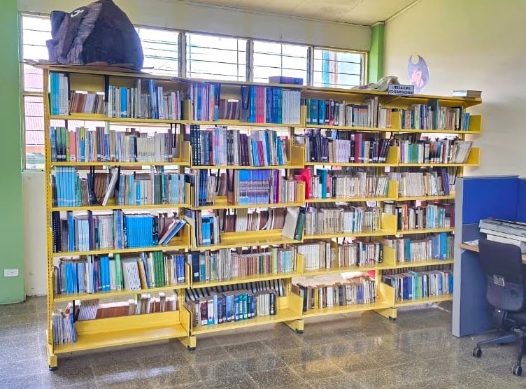
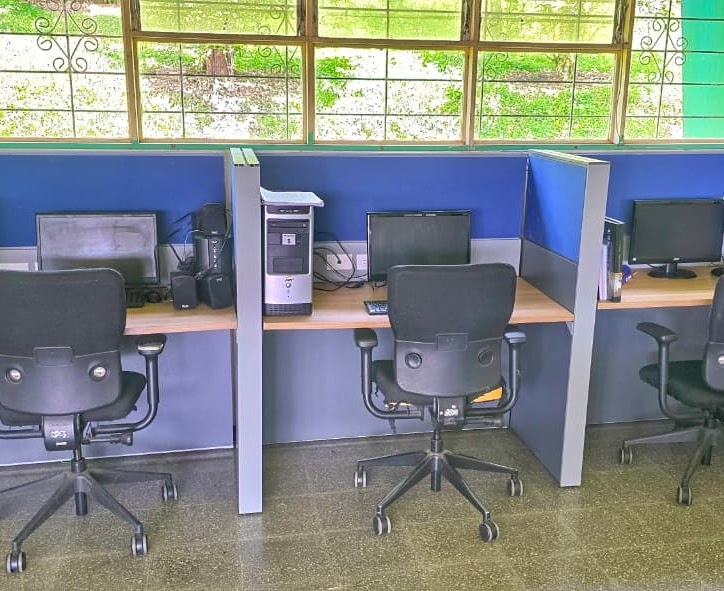
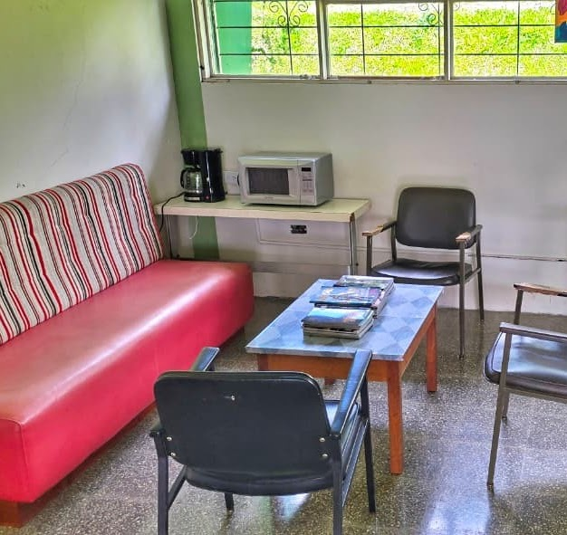
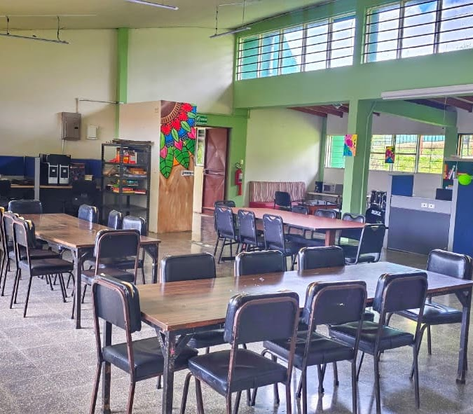
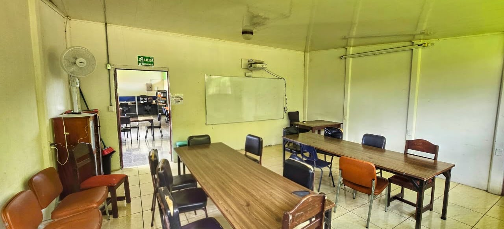
Información básica para solicitar libros y otros recursos de la biblioteca.
Imagen de apoyo para conocer cómo completar la boleta de préstamo de materiales.
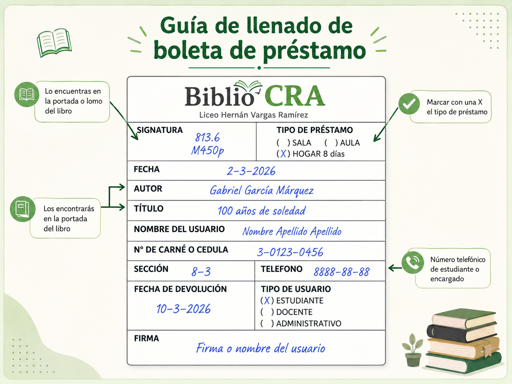
Recursos físicos disponibles para lectura, consulta, investigación y actividades recreativas.
Material bibliográfico para lectura y consulta.
Apoyo para vocabulario, ortografía y comprensión de textos.
Publicaciones para lectura, consulta e investigación.
Material de referencia para trabajos y tareas.
Lecturas visuales y narrativas para fomentar el hábito lector.
Material de lectura recreativa para estudiantes.
Recursos lúdicos para aprendizaje, convivencia y recreación.
Recursos recomendados para materias y actividades escolares.
Normas básicas de uso de la biblioteca y enlaces de apoyo para la comunidad educativa.
Normas básicas para el uso adecuado de la biblioteca, el cuidado de los libros, el orden del espacio y el respeto hacia los demás usuarios.
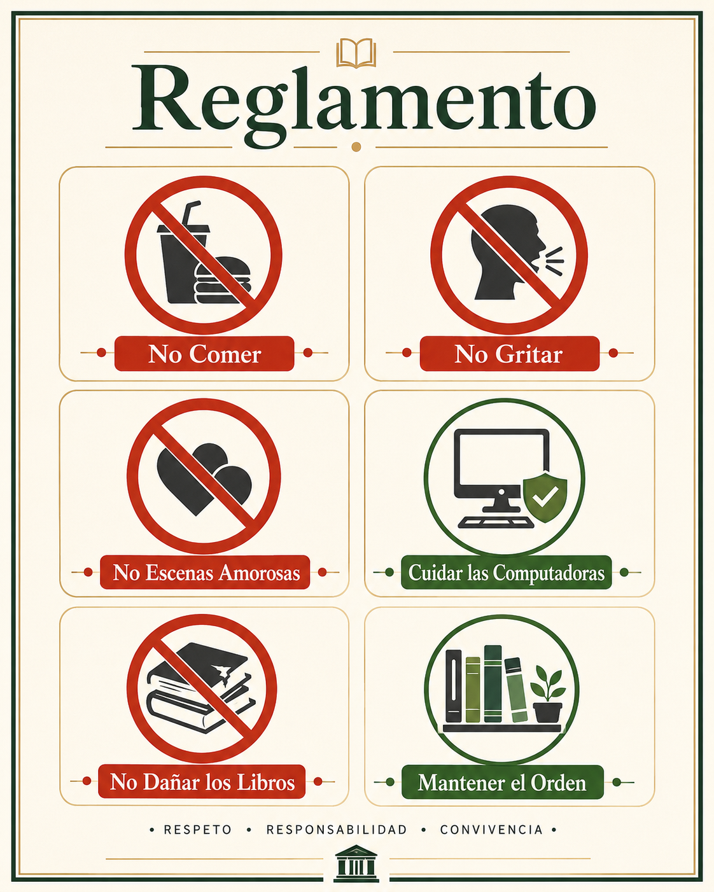
Accede al Site BiblioCRA para consultar la revista digital, material de apoyo, literatura recomendada y otros recursos educativos.
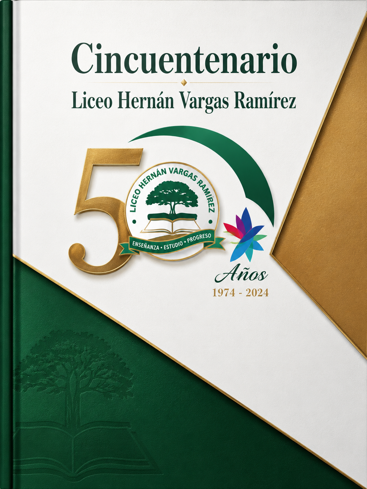
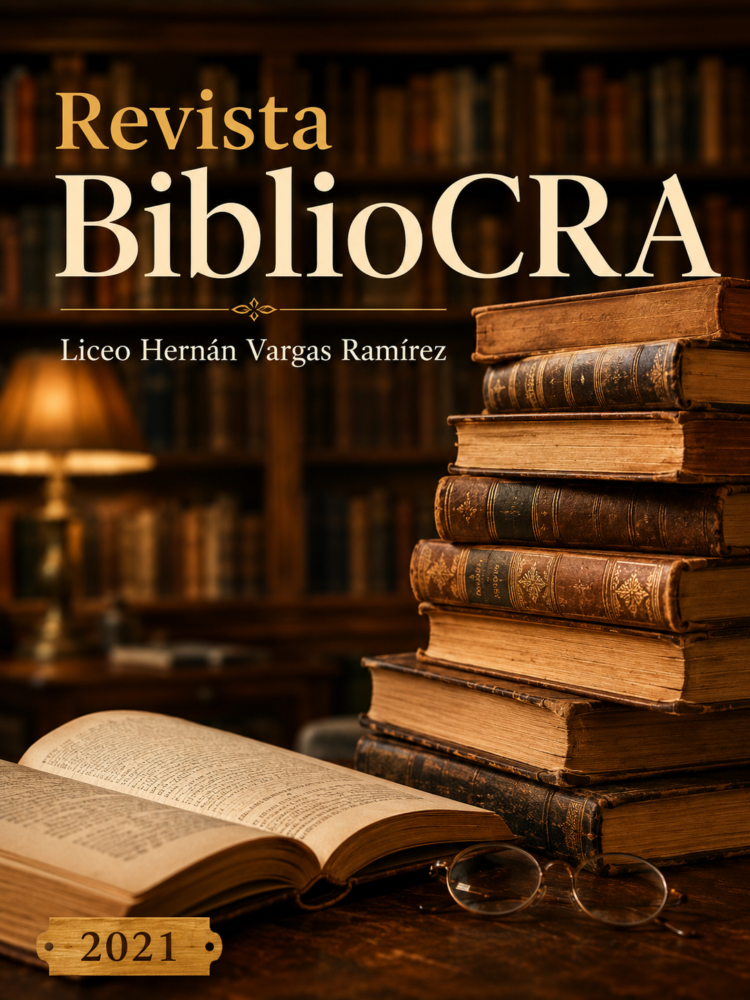
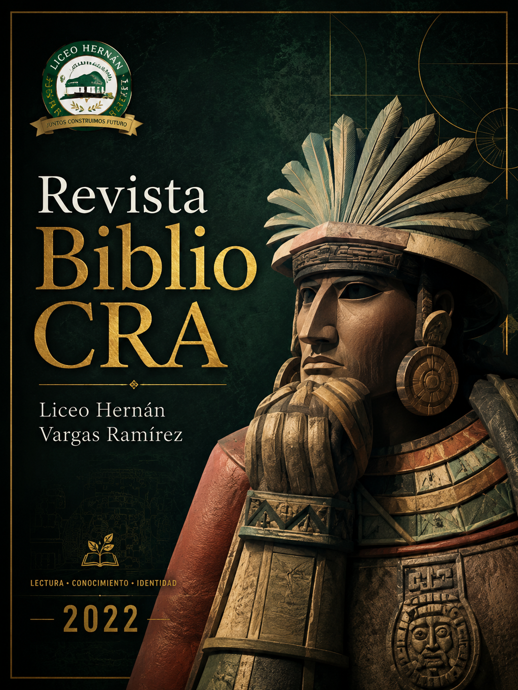
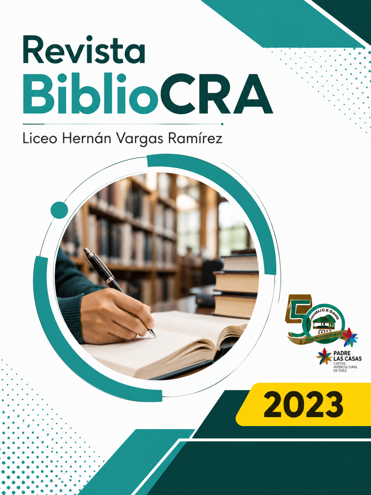
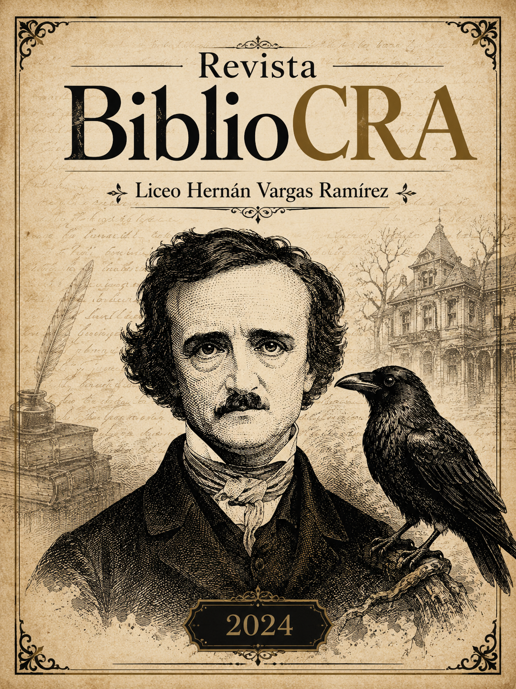
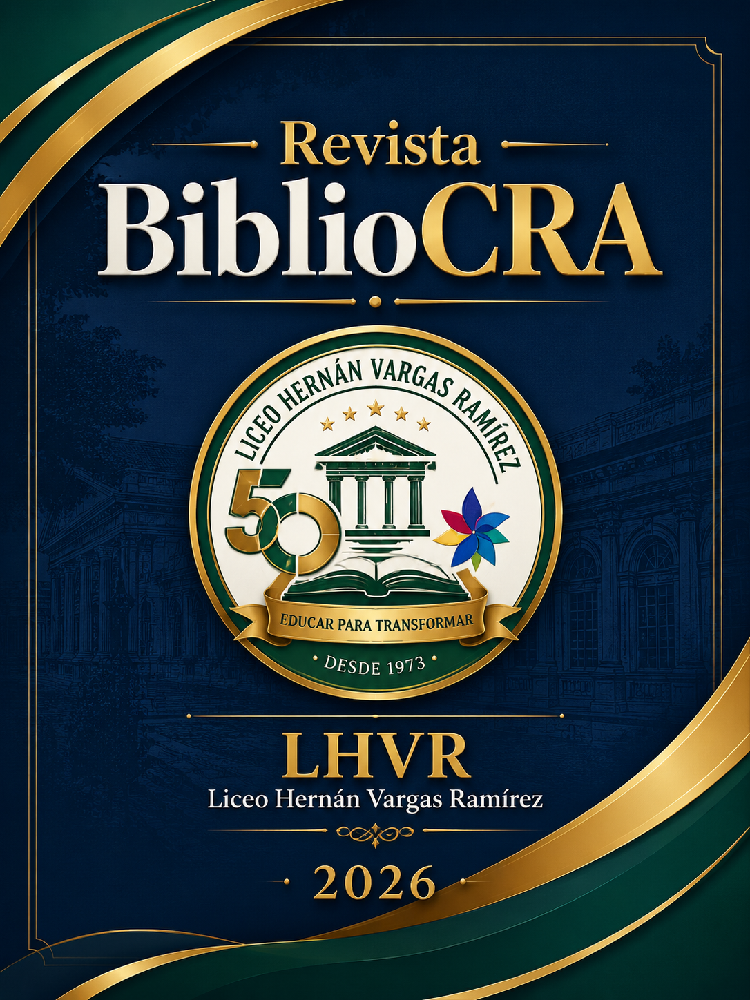